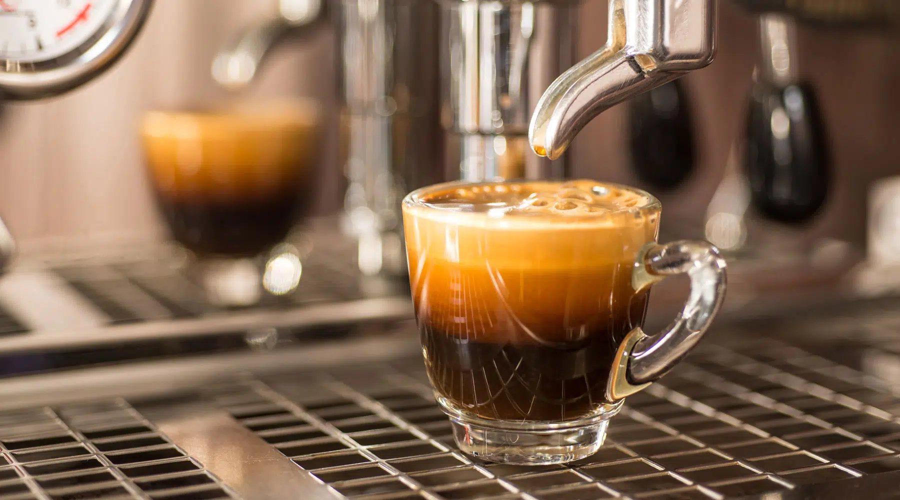
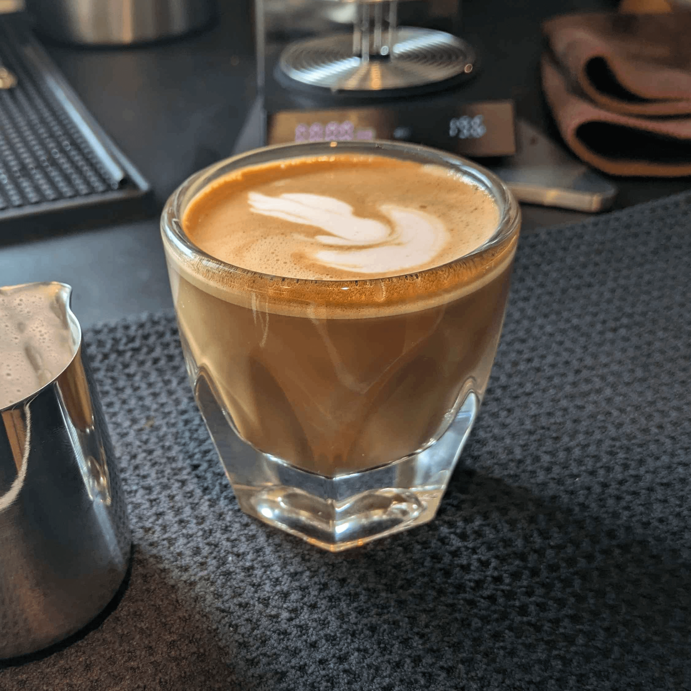
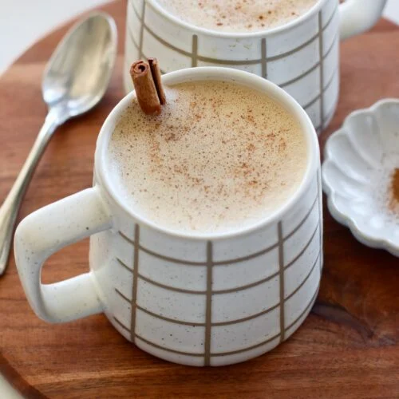
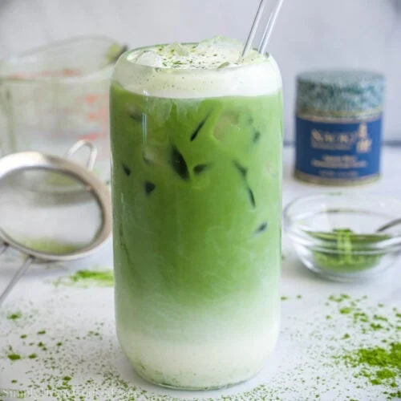

These are our expertly-made drinks from our lovely staff, each is brewed with love.
The Espresso at Café Costa is bold, silky to the feel, made from the finest and freshly ground beans; richness pervades a forceful flavor at each sip. Topped by a smooth creme. This is simply ideal for your preferred specialty drinks or just great on its own as a pick-me-up.
The cappuccino at Café Costa is a perfectly balanced blend of strongly brewed espresso, steamed milk, and a perfectly frothed top layer to make each sip creamy and balanced. Every cup is prepared with the most profound warmth to lighten up one's day, sprinkled with a touch of sweetness from the top layer of cocoa.
The Cinnamon Coconut Latte at Café Costa is the tropical twist of your classic favorite and combines rich espresso with velvety coconut milk, warmed through with a sprinkle of cinnamon spice. The magical drink is finished with a light sprinkling of cinnamon, offering warmth and refreshment in every sip.
The Matcha Latte at Café Costa takes you away with vibrant flavors. The perfectly powdery Matcha green tea blends in with creamy and steamed milk, giving the earthy taste it needs. We sprinkle a bit of matcha powder on top and it will energize anyone.
